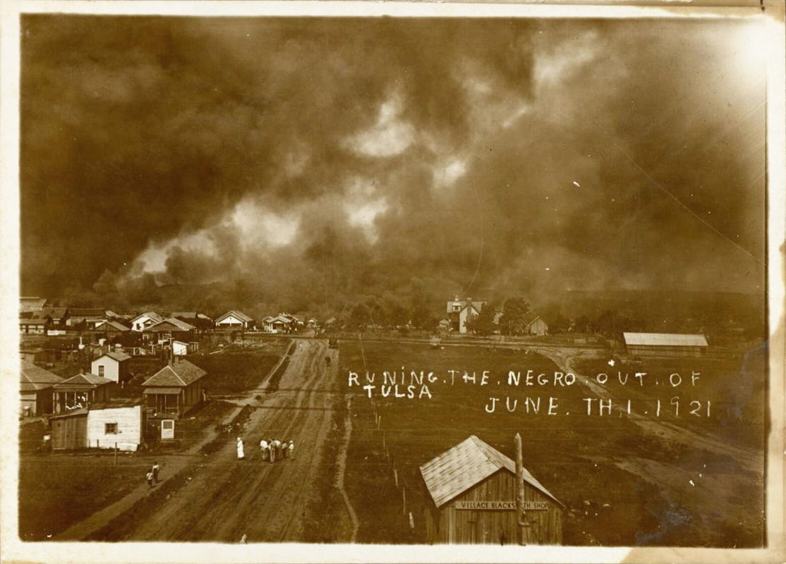
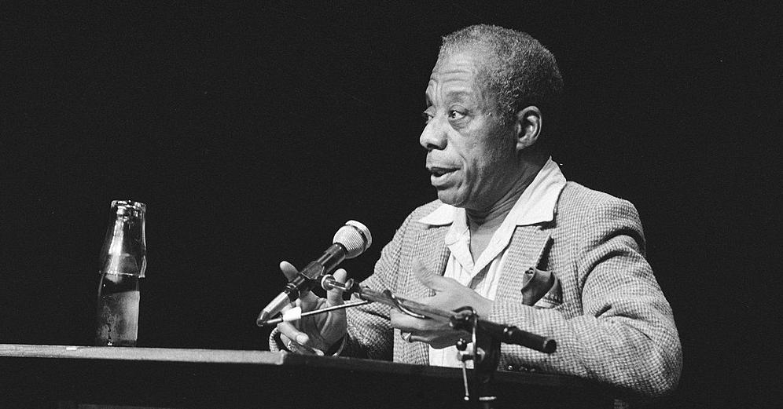

2023-05-11 08:00
Storming of the United States Capitol on 6 January 2021 - Tyler Merbler (1/6/2021)
Past, Present, Future
Efforts to redress old wrongs and make the country a welcoming place for people of color, indigenous, gay, trans, and religious minorities are increasingly met with rage and violence by the American far-right. The very mention of minorities being denied a share of the American Dream immediately provokes Republicans to invoke so-called “divisive concepts.” Social justice has become such a dirty word for the GOP that they denigrate any effort to address racial and sexual injustices, whining instead that white people are the real victims of racism.
In the last century and a half, new history and new analyses have posed uncomfortable questions about our national origins, the nation’s many wars against black, brown and yellow people, and the dismal truth about Reconstruction. New analysis poses uncomfortable questions about a system that generates massive generational wealth for white Americans but denies people of color similar advantages. New studies shed light on the myriad systems that adversely affect people of color – housing, medical, education, police, prisons – and they document in detail how these systems work and how they are “broken” by design.
If you watched Senator Ted Cruz trying to put Judge Katanji Brown Jackson “in her place” during her Supreme Court confirmation hearings, you surely heard the phrase “Critical Race Theory” or CRT. Republicans, who have adopted the white Christian Nationalist critique of scholarship challenging institutional racism, disparage CRT as the spawn of Marxists, atheists and “woke” academics who devised it expressly to make white school children cry.
You probably also heard Senators grilling Judge Jackson about gender, asking her for an open-ended definition of “woman” while accusing her of lenient sentences for child pornographers and being complicit with “child sexual predators” in the “grooming” of victims. Much of this is the stuff of QAnon conspiracies. Some is part of a White Christian Nationalist agenda that Republicans openly pursue. The rest is simply terror that America is changing – and the only tool that Republicans can think of to stop it is repression.

“Running the Negro Out of Tulsa” - The 1921 Tulsa Race Massacre
Republicans lampoon books written to help white liberals understand how culture and privilege sustain structural racism. They ridicule books that simply explain how Black folks feel about life in a racist society. Although they may be read by white people who sometimes clumsily embark upon a bit of self-reflection, titles like Ibram X. Kendi’s “How to be an Anti-Racist” or Michael Eric Dyson’s “Tears We Cannot Stop” are dismissed by the white Christian Nationalist Party as malicious and “un-American.”
These blanket dismissals apply as well to popular and well-researched works: how laws have been written expressly to harm minorities (Richard Rothstein’s “The Color of Law”); how structural racism works in the criminal-legal system (Michelle Alexander’s “The New Jim Crow”); how racist concepts evolved to justify slavery and other forms of oppression (Nell Irvin Painter’s “The History of White People”); how America was founded on genocide and slavery (David E. Stannard’s “American Holocaust” or Kendi’s “Stamped from the Beginning”); and how, for every gain Black America makes, White America pushes back (Carol Anderson’s “White Rage”).
In fact, Anderson absolutely nails it in “White Rage.” White Christian Nationalists resent having themselves and their “Lost Cause” called out.
The ferocity of white Christian Nationalists “pushing back” includes banning or ensuring that books like those mentioned have no place in libraries or ever find their way into school curricula. Academics who conduct research, educators who design curriculum, public officials who turn new findings into policy, or legislators who address social justice issues – all now find themselves with targets on their backs, placed there by Republicans with their white Christian Nationalist agenda.
But none of this is new.
Early 20th Century writers like James Weldon Johnson and W.E.B. DuBois, and mid-century writers like Richard Wright, Ralph Ellison, Lorraine Hansberry, and James Baldwin were widely-known and gave white Americans much to think about. They may have been literary giants but the wisdom of each was discounted. Baldwin’s “The Fire Next Time” (1962) was quickly savaged by American Conservatives, notably William F. Buckley who called the book a “poignant essay threatening the whites” and a call for “the end of Christian Civilization” and “morose nihilism.” White Christian Nationalism was alive and apparent in America’s best-known Gentleman Conservative of the day.

In 1958 Lederer and Burdick’s “The Ugly American” created quite the stir when it challenged American motives, morality and competence as the U.S. began placing “advisors” in Vietnam. We still feel the divisions that the war in Viet Nam caused. Some people today will say “thank you for your service” to members of the military who were directly or indirectly responsible for killing as many as two million Vietnamese civilians. Others question if the services these servicemen and women rendered in questionable wars actually served any constructive purpose.
In 1968 the Kerner Report pointed out that we were moving inexorably toward two “separate but unequal” Americas, one Black, one white. The report pointed to structural and cultural racism in America and it angered white Americans, including many Liberals. In Chapter 4: Basic Causes, the report says bluntly, “… certain fundamental matters are clear. Of these, the most fundamental is the racial attitude and behavior of white Americans toward black Americans. Race prejudice has shaped our history decisively in the past; it now threatens to do so again. White racism is essentially responsible for the explosive m1965 mcixture which has been accumulating in our cities since the end of World War II.”
Instead, most white Americans preferred to read about the supposed moral deficiencies of Black families in overtly racist reports such as the 1965 McCone Commission’s report on the Watts riots or the 1965 Moynihan Report, which laid blame on Black families and Black culture for their own mistreatment.
The 1619 Project is a collection of materials curated by Nikole Hannah-Jones and published by the New York Times which show how the United States was founded upon slavery and genocide. Like their book-banning German cousins, Florida explicitly bans 1619 Project materials. Instead, among the GOP-preferred 1776 Project’s recommended readings on race, curated by a private Christian university, is the old Moynihan Report.
Martin Luther King, Lorraine Hansberry, and James Baldwin were each disappointed with white liberals for being unreliable allies in a struggle for justice that can only succeed with dependable friends. Baldwin’s seven-hour discussion on race and society in 1970 with Margaret Mead was eventually transcribed into a book “A Rap on Race.” Yet for all of Mead’s considerable learning and Yankee sensibilities, her discussion with Baldwin revealed a white Liberal blindness to many aspects of racism and privilege. This is a blindness that extends from simply not “getting it” to complaisance in the face of white supremacy.
“Don’t say primate” - Scopes Trial Cartoon, Kirby, 1925
For as long the the United States has existed, facts, research, science, and statistics have all been at times inconvenient secular truths for some Americans. In 36 states we have regressed so far into the past that we have returned to the year 1925, when the state of Tennessee arrested a teacher, John Thomas Scopes, for violating the state’s Butler Act which criminalized the teaching of “any theory that denies the story of the Divine Creation of man as taught in the Bible, and to teach instead that man has descended from a lower order of animals.”
Those of us of a certain age remember Spencer Tracy playing a fictionalized Clarence Darrow in “Inherit the Wind,” pleading movingly for modernity and science. Perhaps because Darrow’s dialog was so moving, and perhaps because our founding myths always have a Hollywood ring to them, it’s easy to forget that Darrow actually lost the case. John Scopes was found guilty and the Butler Act remained on Tennessee’s books until 1968 when statutes violating the Establishment Clause were struck down by the U.S. Supreme Court. It took another decade for Tennessee itself to remove the statute.
The end of Creationism in the schools must have been a hard pill for white Christian Nationalists to swallow. And they have continued to chip away at the Establishment Clause.